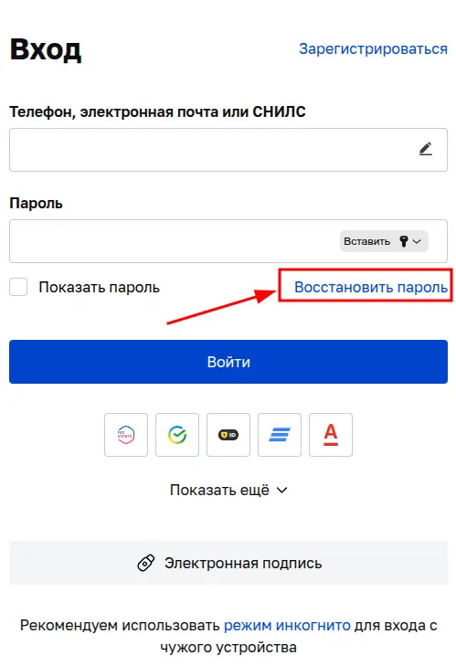
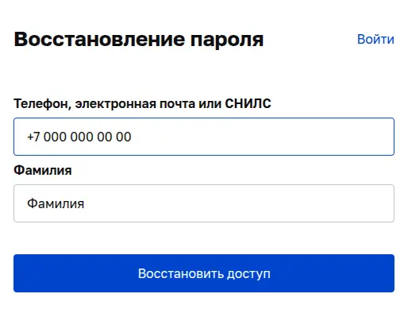
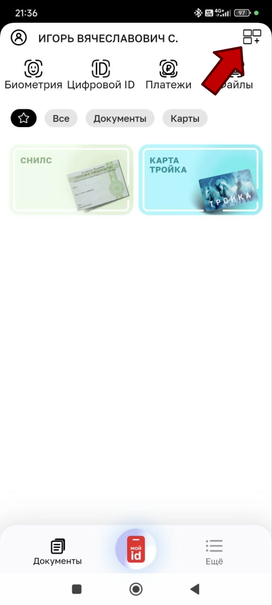
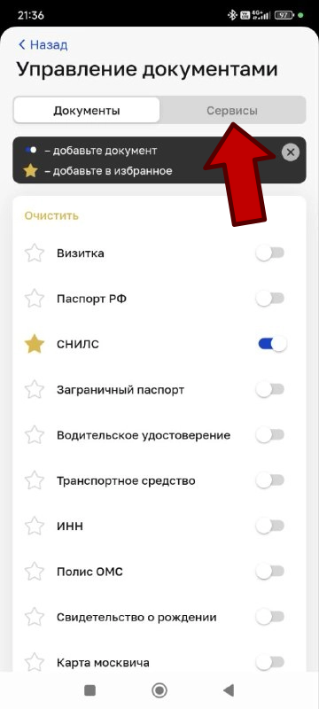
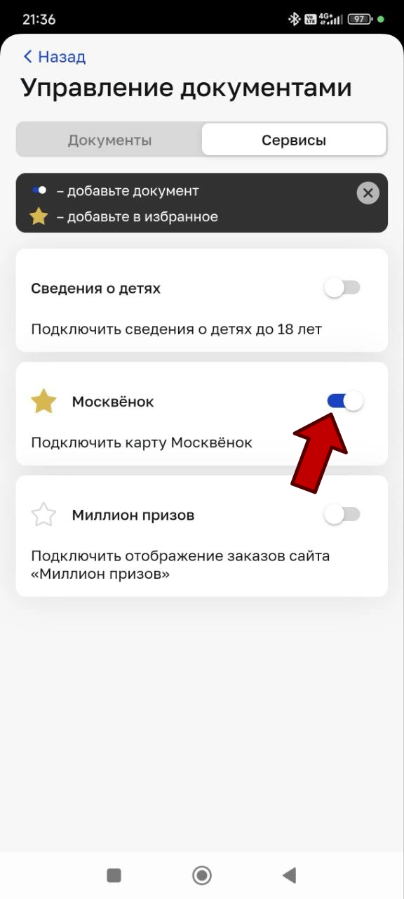
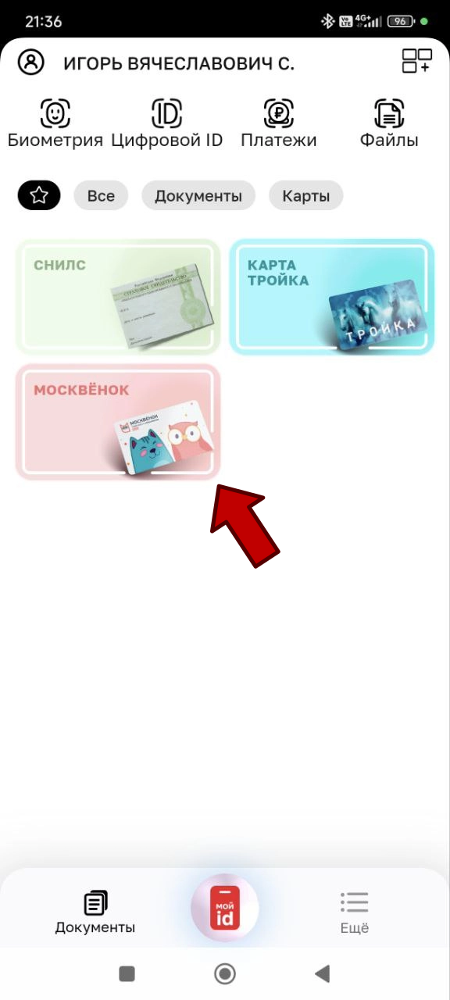
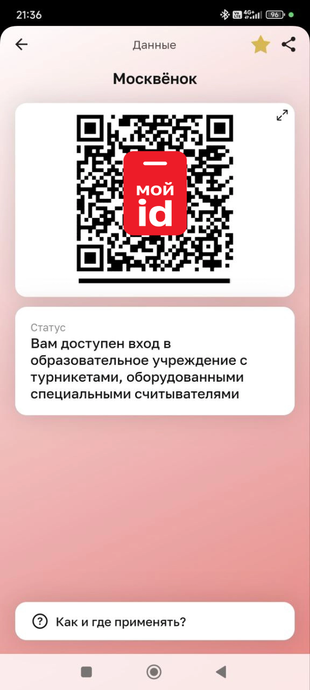

Android
Внимание!
Приложение "Мой id" - не возможно найти в магазине Google play.
Приложение находится в магазине RuStore.
Скачать его можно здесь: rustore.ru
- 1. Выбрать раздел: "Приложения"
- 2. В строке поиска набрать: мой id
- 3. Установить приложение, как на картинке ниже.

После установки запустить приложение.
Нажмите "Войти с MOS ID" и используйте свой личный логин и пароль от портала mos.ru (Этот же пароль вы используте для входа в дневник)

На первом экране, после запуска прилоежния, необходимо перемстить ползунок СНИЛС, Карта москвича вправо и нажать кнопку сохранить. Дополнительно ничего выбирать нет необходимости, но если выбрали - оставьте.

Программа предложит вам установить 4х значный пин код для входа в приложение. Вы можете установить, а можете пропустить. Это считается дополнительной защитой.

Поссле ввода пинкода, программа автоматически перебросит вас на главный экран.
Необходимо нажать на кнопку "Биометрия"

Вас перебросит на следующее окно, где нужно нажать кнопку "Управление биометрией"

Потребуется повторная авторизация на портале mos.ru (Этот же пароль вы используте для входа в дневник)

Если вам нет 18 - система выведет сообщение, что необходмо подтверждение родителя или законного предстиавителя.
Под текстом будет ссылка, нажмите на неё и удерживайте палец на экране несколько секунд.
В выпадающем списке нажмите поделиться и отправьте ссылку родителю.
Родитель должен подтвердить.

После подтверждения родителем, вернитесь на главный экран.
Воспользуйтесь кнопкой "Готово" или стрелочкой назад.
Повторно нажмите на кнопку "Биометрия"
Далее "Управление биометрией"
Снова пройдите авторизацию с помощью своего личного логина и пароля от портала mos.ru (Этот же пароль вы используте для входа в дневник)
Теперь вы окажетесь на страничке с регистрацией биометрии.
На снимке ниже, пример, того, как должен выглядить конечный результа, в вашем случае будет надпись "Не зарегистрировано"
Нажмите кнопку зарегистрировать.

Откроется окно в котором вы должны сделать своё селфи.

После регистрации вашей фотографии у вас должно получиться вот такой результат.
Выражаю вам большую благодарность за проделанную работу и ваше
терпение.
Спасибо.
iPhone
ВАЖНО!
Проверить, что на телефоне выбран регион "Россия". В противном случае приложение не найдётся.

Войдите в магазин приложений App store
В строке поиска набрать "Мой id" (Текст частично на русском, частично на английском. Большие буквы в ID недопустимы.)
Установите приложение

После установки запустить приложение.
Нажмите "Войти с MOS ID" и используйте свой личный логин и пароль от портала mos.ru Этот же пароль вы используте для входа в дневник

На следующем этапе программа предложит вам установить 4х значный пин код для входа в приложение. Вы можете установить, а можете пропустить. Это считается дополнительной защитой.

На первом экране, после запуска прилоежния, необходимо перемстить ползунок СНИЛС вправо и нажать кнопку сохранить. Дополнительно ничего выбирать нет необходимости, но если выбрали - оставьте.

Автоматически вас перебросит на главный экран.
Необходимо нажать на кнопку "Биометрия"

В этом окне нажать кнопку "Управление биометрией"

Выполните повторную авторизацию на портале mos.ru (Этот же пароль вы используте для входа в дневник)

Если вам нет 18 - система выведет сообщение, что необходмо подтверждение родителя или законного предстиавителя.
Под текстом будет ссылка, нажмите на неё и удерживайте палец на экране несколько секунд.
В выпадающем списке нажмите поделиться и отправьте ссылку родителю.
Родитель должен подтвердить.
После подтверждения родителем, вернитесь на главный экран.
Воспользуйтесь кнопкой "Готово" или стрелочкой назад.
Повторно нажмите на кнопку "Биометрия"
Далее "Управление биометрией"
Снова пройдите авторизацию с помощью своего личного логина и пароля от портала mos.ru (Этот же пароль вы используте для входа в дневник)
Теперь вы окажетесь на страничке с регистрацией биометрии.
На снимке ниже, пример, того, как должен выглядить конечный результа, в вашем случае будет надпись "Не зарегистрировано"
Нажмите кнопку зарегистрировать.

Откроется окно в котором система попросит вас предоставить доступ к вашей камере. Разрешите.

Откроется окно в котором вы должны сделать своё селфи.

После регистрации вашей фотографии у вас должно получиться вот такой результат.
Выражаю вам большую благодарность за проделанную работу и ваше
терпение.
Спасибо.
Типовая ошибка: не все данные
Согласие на обработку биометрических персональных данных
Возникла ошибка при регистрации согласия.
Пожалуйста, убедитесь, что:
- все поля заполнены корректно
- ваша учётная запись имеет уровень "полная"
- в личном кабинете на mos.ru в разделе "Семья и дети" подтвержено родство с вашим ребенком или подопечным
- в учётной записи ребенка или подопечного указан СНИЛС
- ваше интернет-соединение стабильно
И повторите попытку
Такой тип ошибки возникает, когда у родителя нет или не полностью заполнена информация о ребёнке.
Что нужно сделать:
Родителю, который будет подтверждать разрешение на биометрию, необходимо зайти на портал мэра москвы mos.ru
Нажать на иконку человечка в верхнем правом углу.

Авторизуйтесь под учётной записью родителя, который будет подтверждать биометрию.
Для входа, как правило, используется телефон в качестве логина, но может использоваться почта и СНИЛС и ваш личный пароль.

Если не помните пароль. Воспользуйтесь кнопкой восстановить пароль
Укажите телефон и вашу фамилию
(Телефон можно указывать как с +7, так и 8 - разницы нет) Вам придёт код на телефон, послее вода кода, система прдложит создать новый пароль.
Если код не приходит: 1. Проверьте связь. 2. Есть вероятность, что номер с которого приходят СМС находится у вас в Чёрном списке. Зайдите на телефону в СМС и проверьте в настройках.Не помните, какой номер телефона использовали или какую электронную почту?
Не уверены, что у вас есть учётная запись на портале?
Выполните следующее:
- Нажать кнопку восстановить пароль.
- Укажите СНИЛС.
- Укжите вашу фамилию.
- Нажмите кнопку восстановить.
Если вы есть в системе, на экране вы увидите подсказки в виде телефона и электронной почты, которые привязаны к указанному СНИЛС.
Если ниаких данных не нашлось, значит необходимо зарегистрироваться mos.ru
После успешной авторизации, вновь необходимо нажать на иконку человечка в верхнем правом углу.

Откроется выпадающее окно.
Нажмите на ссылку Документы и данные.

Будет совршён автоматический переход на новую страницу, нажмите на кнопку Документы.

Выберать раздел Семья и дети.

Обращаю ваше внимание!
Если никакой информации о ребёнке, для которого создаётся биометрическое разрешение, нет.
Необходимо нажать кнопку Добавить члена семьи и заполнить для него всю инфрмацию, которая будет описываться дальше.
Если ребёнок добавлен - нажмите посмотреть и редактировать и также сверяйтесь с инструкцией ниже.

В подсвеченной красным цветом области, отображается текущее состояние записи о ребёнке.
- Наличие галочек, как на примере, говорит, что все данные успешно заполнены.
-
При отображении другой информация, необходимо проверить:
- Информацию по свидетельству о рождении.
- Свидетельство не прошло проверку в единой системе ЗАГС.
- Отсутствует СНИЛС.
- Не указано родство. Кем приходится вам добавленный ребёнок.
- Для граждан чьё свидетельство о рождении получено не в России, необходимо обратиться в местное МФЦ для подтверждения последнего.

В этом разделе указывается родство.

Заполнить поля, как указано в бумажном свидительстве о рождении.
Данные по ЗАГС - заполняются один в один, как в вашем свидетельстве.
Никаких дополнений¸ но и упускать ничего не стоит.

Внимание!
Пример описанный здесь обязателен к заполнкению. Не пропускайте его.
Обязательно укажите дату составления актовой записи. Её можно найти на листке свидетельство о рождении.
Номер актовой записи, так же можно найти на листке. Он может быть двух, трёх значним, но после прохождения проверки превратится в 21-ти значный код. Это нормально. Ничего не меняйте.
Наименование органа выдавшего свидетельство необходимо выбрать из предоставленного списка. Никак иначе.
Список появится, как только вы введёте название ЗАГС из листка свидетельство о рождениию

Укажите СНИЛС

После прохождения весх проверок, личная карточка ребёнка получит 4 зелёных галочки.
Данные галочки говорят, что всё сделано правильно.
Если, какая либо из галочек не стоит, значит не выполнено одно из условий. Необходимо пройти по списку ещё раз.

Сохраните введённые вами даные, нажав на кнопку сохранить.
Внимательно проверьте поставленные вами галочки.

Типовая ошибка: 500
500
Страница недоступна
По какой-то причине мы не можем сейчас отобразить эту страницу.

Этот вид ошибки возникает при попытке выдать разрешение на полчение биометри.
Означает, что сервер не смог выполнить ваш запрос.
- Ошибки в коде приложения (синтаксические ошибки, логические сбои).
- Проблемы с базой данных — сервер не может подключиться к базе данных или выполнить запрос к ней.
- Неправильные настройки сервера — ошибки в конфигурационных файлах сервера (например, .htaccess для Apache или nginx.conf для Nginx).
- Недостаток ресурсов сервера — если владелец сайта делит сервер с другими пользователями, из-за большого числа запросов сервер может оказаться перегружен.
- Проблемы с обновлениями — после обновления CMS, плагинов или серверного ПО могут возникнуть конфликты или ошибки.
- Скрипты работают слишком медленно — если скрипт не успел исполниться в определённый промежуток времени, система выдаёт ошибку.
Замечено, что чаще всего от этой ошибки страдают владельцы iPhone
1. Неообходимо проверить наличие интернета
2. Проверить не включен ли VPN
3. Проверить какой регион выбран в настройках. Зарубежные сервисы блокируют доступ к государственным сайтам России.
4. Воспользоваться браузером, который поддерживает российские сервисы. Yandex-браузер
5. Воспользоваться ноутбуком или компьютером.
ЛайфХак - вход по QR-коду
Ситуция.
Вы забыли карточку.
Отркываем приложение Мой id
Авторизуемся с помощью логина или пароля от дневника.
На главном рабочем столе нажать на кнопку меню.
В разделе управление документами перейдите во вкладку сервисы
Установите флажок напротив раздела Московёнок
Вернитесь на гланую страницу
Теперь на голавной странице у вас появился раздел с виртуальной картой Московёнок
Нажмите на раздел и у вас откроется QR-code с виртуальной картой Московёнок.
Поднесите его к считывателю турникета